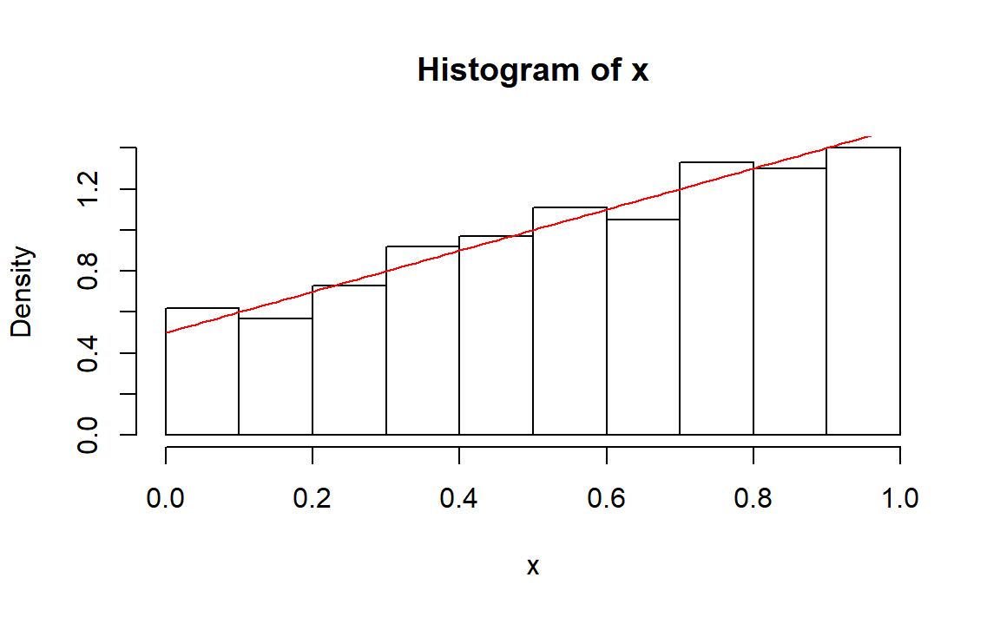

4 均匀分布随机数生成
set.seed(1024)4.1 习题
习题1
易证。
习题2
解：
将[0,1]等分为\(k\)段，每个端点分别为\(x_i=i/k,i=0,\dots,k\)，考虑左闭右开区间，如果给定点\(x\)落在\(x_i\le x<x_{i+1}\)中，有\(i/k\le x<(i+1)/k\)，即\(i\le kx <i+1\)，\(\lfloor kx \rfloor=i\)，若\(x<0\)或\(x>1\)报错。
runif.chisq.test <- function(x, k)
{
y <- rep(0,k)
for (i in seq_along(x)) {
j <- floor(k*x[[i]]) # 第j段
if(x[[i]]==1){
y[[k]] <- y[[k]]+1
}else if(j<0 | j>=k){
stop("there is value of x out of [0,1]")
}else{
y[[j+1]] <- y[[j+1]]+1
}
}
chisq.test(y)
}测试一下：
x <- runif(1000)
k <- 10
runif.chisq.test(x,k)
#>
#> Chi-squared test for given probabilities
#>
#> data: y
#> X-squared = 3.06, df = 9, p-value = 0.9619通过检验。
x <- rnorm(1000)
x <- x[x>=0&x<=1]
k <- 10
runif.chisq.test(x,k)
#>
#> Chi-squared test for given probabilities
#>
#> data: y
#> X-squared = 20.047, df = 9, p-value = 0.01763显著性水平0.05下拒绝原假设。
习题3
解：
类似地，这里对输入数据的最小值与最大值之间等分\(k\)段，每个端点分别为\(x_i=i/k,i=0,\dots,k\)，考虑左闭右开区间，如果给定点\(x\)落在\(x_i\le x<x_{i+1}\)中，有\(i/k\le x<(i+1)/k\)，即\(i\le kx <i+1\)，\(\lfloor kx \rfloor=i\)。
# F为分布函数
random.chisq.test <- function(x, k, F)
{
library(purrr)
xmin <- min(x)
xmax <- max(x)
d <- xmax-xmin
j <- floor(k*(x-xmin)/d)
y <- rep(0,k+2)
for (i in seq_along(x)) {
if(x[[i]]==max(x)){
y[[k+1]] <- y[[k+1]]+1
}else{
y[[j[[i]]+2]] <- y[[j[[i]]+2]]+1
}
}
p <- seq(xmin,xmax,length.out = k+1) %>%
map_dbl(F)
p <- c(p[[1]],diff(p),1-p[[k+1]])
chisq.test(y,p = p)
}测试：
x <- rnorm(1000)
k <- 10
random.chisq.test(x,k,pnorm)
#> Warning in chisq.test(y, p = p): Chi-squared approximation may be incorrect
#>
#> Chi-squared test for given probabilities
#>
#> data: y
#> X-squared = 8.422, df = 11, p-value = 0.6751x <- runif(1000)
k <- 10
random.chisq.test(x,k,pnorm)
#>
#> Chi-squared test for given probabilities
#>
#> data: y
#> X-squared = 2044.9, df = 11, p-value < 2.2e-16通过测试。
习题4
解：
这个应该是下一节的内容，不过无所谓啦。先得到它的分布函数为 \[ F(x) = \frac12x+\frac12x^2,\quad0\le x\le1 \]
1、逆变换法：
先求\(F^{-1}\)为： \[ F^{-1}(u) = -\frac12+\sqrt{2u+\frac14} \] 从而定义函数：
rng.x1 <- function(n)
{
-0.5+sqrt(2*runif(n)+0.25)
}测试：
n <- 1000
x <- rng.x1(n)
hist(x,freq = FALSE)
y <- seq(0,1,0.01)
z <- 0.5+y
lines(y,z,col="red")基本吻合。
2、舍选法
就是拒绝采样啦，取提议分布为均匀分布\(U[0,1]\)，则\(c=1.5\).
rng.x2 <- function(n)
{
x <- runif(n)
y <- runif(n,0,1.5)
s <- x[y<=0.5+x]
list(samples = s, eff = length(s)/n)
}测试：
n <- 1000
x <- rng.x2(n)
hist(x$samples,freq = FALSE)
y <- seq(0,1,0.01)
z <- 0.5+y
lines(y,z,col="red")基本吻合。看一下效率：
x$eff
#> [1] 0.669理论上的效率为\(2/3\)。
3、复合法
将梯形面积分解为一个矩形跟一个三角形，两者面积都是0.5。
rng.x3 <- function(n)
{
i <- runif(n)
x <- runif(n)
# 小于等于0.5保持值，大于0.5开平方
x[i>0.5] <- sqrt(x[i>0.5])
x
}测试：
n <- 1000
x <- rng.x3(n)
hist(x,freq = FALSE)
y <- seq(0,1,0.01)
z <- 0.5+y
lines(y,z,col="red")
比较算法的效率？除了舍选法会拒绝点之外，其余两者算法都是全部接受点的。看一下函数的运行时间吧，虽然这个比较粗糙，因为跟算法编码的设计有关，不一定是算法本身的问题：
n <- 10000000
t1.1 <- proc.time()
x <- rng.x1(n)
t1.2 <- proc.time()
t1 <- t1.2-t1.1
t2.1 <- proc.time()
x <- rng.x2(n)
t2.2 <- proc.time()
t2 <- t2.2-t2.1
t3.1 <- proc.time()
x <- rng.x3(n)
t3.2 <- proc.time()
t3 <- t3.2-t3.1
df <- data.frame(`逆变换法`=t1[3][[1]],`舍选法`=t2[3][[1]],`复合法`=t3[3][[1]])
knitr::kable(df)| 逆变换法 | 舍选法 | 复合法 |
|---|---|---|
| 0.52 | 1.06 | 1.1 |
总的来说，逆变换法要更好点，舍选法要稍差点。